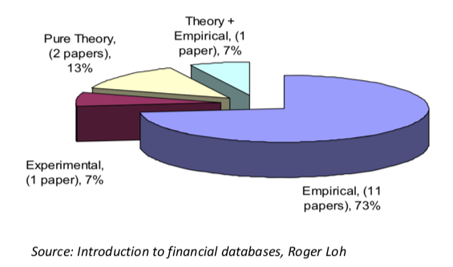
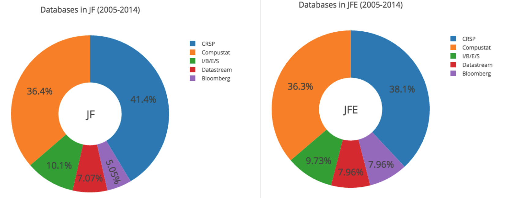
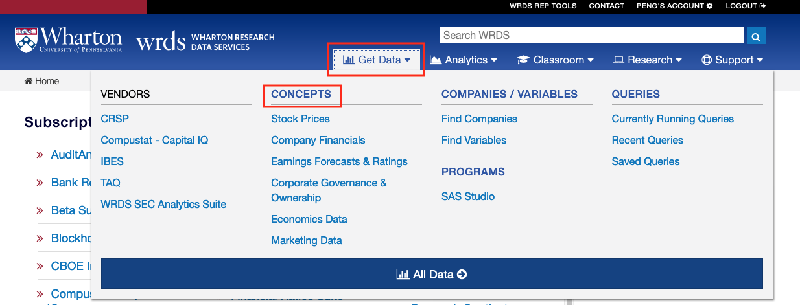
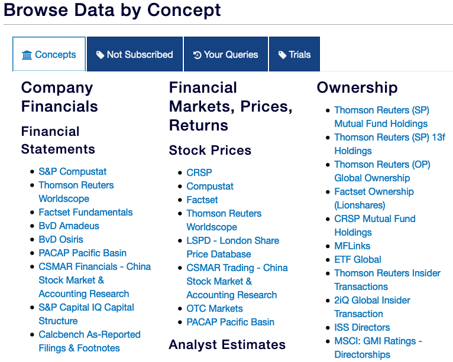
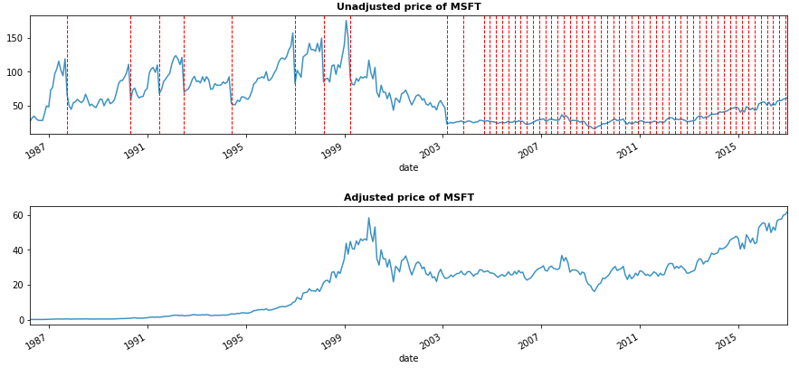
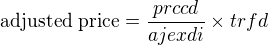
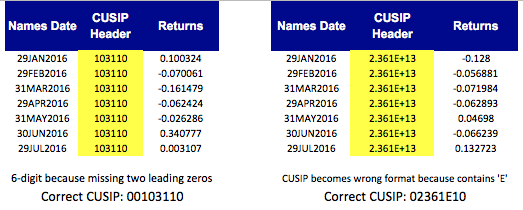

WRDS
Wharton Research Data Service
https://wrds-www.wharton.upenn.edu/


exchcd: stock exchange code| exchcd | stock exchange |
|---|---|
| 1 | NYSE |
| 2 | AMEX |
| 3 | NASDAQ |
shrcd: share code| shrcd | share type |
|---|---|
| 10 | common shares |
| 11 | common shares |
prc: stock pricemarket value = stock price * number of shares
tpci: share type
fic: country code| fic | Name |
|---|---|
| GBR | United Kingdom |
| DEU | Germany |
Country code list: https://en.wikipedia.org/wiki/ISO_3166-1_alpha-3
prccd: unadjusted closing price

ajexdi: adjusted factortrfd: return factor
import pandas as pd import wrds conn = wrds.Connection() crsp = conn.raw_sql(""" select permno, date, ret, abs(prc) as price_adj, shrout from crsp.msf where exchcd between 1 and 3 and shrcd between 10 and 11 and date>='2015-01-01' """)
Two problems if you download data in Excel:
